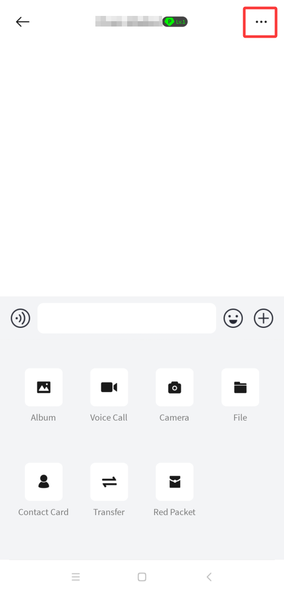
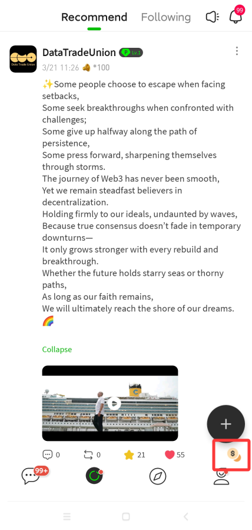

PCNapp 到底值不值得掏钱？三档用户的付费账本
从免费版能撑多久、付费项到底解决什么痛、到替不付这笔钱还有什么替代，把 PCNapp 里每一笔可选付费的账给你算透。
它到底值不值得掏钱？
这是我装了 PCNapp 一个月以来问自己最多的一个问题。
作为 P.CN 生态的移动端入口，PCNapp官网上展示的加密钱包、加密社交和广场内容三件事，确实被揉进了同一个 App 里。下载和注册本身完全免费——邮箱注册即用，没有助记词那道门槛。但用了大概两周之后，我开始撞上那些"继续用下去就要花钱"的坎：群聊人数到顶了、想建个大点的超级群、发了一条广场内容没多少人看见。
就像很多同时覆盖免费和付费功能的产品一样，PCNapp 的付费设计不是硬买硬卖，而是在你真要用起来的时候——在你把它当回事的时候——才会露出它的定价版图。这篇我就把它列出来的每一个付费点掰碎了算，把免费版给了什么、付费版多了什么、以及对不同使用强度的人来说，这笔钱花得值不值。

定价拆解：免费版给什么，付费版多什么
先把底盘摸清楚。免费版是基础全套：MPC 钱包能正常收发转账、社交消息能一对一和建 100 人以内的普通群、广场内容能看能发能点赞。应用本身不插广告，这一点体验上挺干净。
需要掏钱的地方，集中在三个功能层面：
群聊扩容。默认上限 100 人——这个数字对大多数朋友群其实够用。但如果你是想拉一个同好圈子、或者要做小范围的主题讨论，100 人一到就得升级。PCNapp文档里写的是"按等级付费扩容"，意思大概是你加多少人、对应不同价位的一次性费用，不是按月订阅。定价没在下载页明摆着写，得在 App 内触达那个扩容按钮才会弹价格——这一点挺微妙，不像有些产品直接在主页把档位挂出来。
超级群创建与升级。超级群是针对更大家庭量级的群聊功能，容量比普通扩容群还大。创建和升级都是按容量等级定价。这条线和普通扩容不同的地方在于：它不是"你群满了加钱"那种补位思路，而是"你一开始就想要一个大群"的规划思路。
数字喇叭加推。这是广场内容的推广工具，按个计费——发了一条广场动态，愿意出钱就能让它推送给更多人。对纯浏览派来说这个功能完全不存在；对想在广场上有点存在感的创作者来说，这是唯一的"加速通道"。
整体感受下来，PCNapp 的付费设计有两个特点：一是没有强制订阅，没有"高级会员月费"这种东西，全是按功能按需付费——你不用扩容就永远不会被收扩容钱，你不发推广就永远不会被加收推钱；二是免费版不会挡你进门，不会给你弹窗催充，不会给你限流，就是在你真要用某个功能的时候才说"哦，这个要加钱"。
这个设计挺鸡贼的地方在于：它不会让你在第一天就觉得"这玩意儿要花钱"，它会让你在第二十天、第三十天，在你已经把群拉起来了、已经在广场上发了十几条动态、已经真的有点在意这个工具的时候，才让你发现"哦，我好像得掏点钱了"。
分三类人算账
下面分三种典型使用强度，把每单位时间的成本算明白。我不用假设具体价格数字——PCNapp 没在文档里明写档位，硬编没意义。用时间账来算，更实用。
轻度用户：日常聊天 + 小额转账。占大多数。朋友群拉个二三十人，一对一聊聊天，钱包里放小额资产偶尔转一下。对这类人来说，免费版完全够用——100 人的群上限撑到天了，广场看看就是了，发不发推广无所谓。花时间折腾付费项，反而让本来挺轻的一件事变重了。时间账：每天省下可能五分钟的"要不要付费"的心理内耗，值。
主力用户：有一个稳定的主题群 + 偶尔发广场。这类人真的会用到 PCNapp 想让你付费的地方。群聊可能已经到了八九十人，再过几天就要触顶；广场发的内容可能一周两三条，觉得没人看见有点可惜。对他们来说，核心问题是两个：群聊要不要扩容、数字喇叭要不要买。
群聊扩容的决策其实很直接：你的群有没有真的在"活"——如果最近两周每天都有人发消息、有人新加入，那 100 人到顶扩容就是刚需，这笔钱花出去是"维持一个已经跑起来的东西继续跑"；如果其实只有二三十人在活跃，那根本到不了 100 人，扩容的钱就是白花。数字喇叭加推同理：你发的广场内容有没有真的人跟你互动？如果每发一条至少有五六个点赞，说明有人看，加推就是"让更多本来会感兴趣的人看到"，相当于给你的内容加了一个合理的分发加速；如果你发十条只有自己能看见，那加推就是把钱往水里扔。
对主力用户来说，合理的付费节奏大概是：先跑起来——群先凑到六七十人、广场先发十来条内容——再看要不要花第一笔钱。付费不是为了"让事情开始"，是为了"让已经在跑的事情跑得更顺"。这个逻辑反过来就变成"为了花钱而花钱"，完全没必要。
重度用户：多群管理 + 广场持续输出。这类人是 PCNapp 付费设计的精准收割对象。普通群可能已经扩容过、还想再大，或者一开始就想建超级群；广场可能是个人品牌或者项目推广的阵地，数字喇叭加推是常规预算项。对他们来说，PCNapp 的付费结构反而是好消息：全按功能付费，没有会员月费的"订阅压力"——这个月不想加推就不买喇叭，下个月想搞大群就建一个超级群，预算完全灵活。
时间账：重度用户在 PCNapp 上花的时间已经不低了——每天可能一两个小时。把付费项当成"买时间"来看：群扩容省掉的是"不得不把人拆到第二个群、不得不反复跟新成员解释为什么有两个群"的管理时间；数字喇叭省掉的是"花更多时间自己去其他渠道转发广场内容"的推广时间。如果一个付费项能帮你每周省下至少两三个小时，那就值得。

不付这笔钱，还有什么别的路
先聊最现实的替代方案——同类免费工具换着用。加密社交这条赛道上，Telegram 是绕不开的对照组：免费、群上限够大、频道功能成熟。如果你的核心痛点只是群聊人数不够，Telegram 免费群可以到 20 万人，完全不需要付费。PCNapp 独有的地方是 MPC 钱包和社交的深度绑定——在同一个 App 里就能转账、发红包、在群里发起小额链上交互。如果你不需要钱包和社交在同一个应用里，把钱包（任何主流加密钱包）和社交（Telegram 或者微信）分开用就行，一分钱不用花。
再说降低使用频率的代价。比如群聊不满 100 人怎么办？其实大多数朋友群或者主题群，真正活跃的人数大概也就十几二十个。100 人上限对一个"刚起步"的群来说是够的，真正需要扩容的时刻可能在三个月之后。那三个月里你完全可以先不管付费的事，把群真的做起来再说。数字喇叭不加推怎么办？那就把广场当成个人笔记——发了有人看是惊喜，没人看也不亏，反正免费。
还有一种思路是等一等。P.CN 生态的迭代速度不算慢，3.4.2 版本刚更新了购物返利合作平台接入，之前的版本改了浏览器加载速度、改了新闻推送。定价结构也可能随着版本调整——现在的付费档位可能半年后会有新的选择。对于还在观望的主力用户来说，等一两个月再决定是否付费，不会错过什么关键的时间窗口。
结论：三类人的行动清单
到了这一步，账应该算清了。对照自己的情况：
轻度用户永远不用付。邮箱注册免费版就是你的最佳组合。真的哪天需要群超过 100 人，考虑换到 Telegram 或者拆成两个群，比掏扩容钱划算。
主力用户再等等、再看看。等你的群真的冲到 80 人以上、等你的广场内容真的有稳定互动了，再考虑第一笔付费。不要在 App 打开第一周就冲动充值。用的越久，你对"这个功能值多少钱"的判断就越准。
重度用户可以闭眼付。但有一个前提：先跑起来再花钱。不要为了建一个还没多少人的超级群就先掏大价钱，不要为了让十条内容里只有自己点赞的广场动态加推。PCNapp 的付费设计不催你、不逼你，它给你留出了这个"先跑起来"的余地——好好利用这个余地。
最后说一句我的个人账本上的当前状态：群聊 42 人，广场发了 17 条，钱包里装了点小额资产。还没花过一分钱，也不打算短期内花。不是说它的付费项不值，而是我的使用强度还没到那个档位。等真的到了，我会再算一遍这本账。另外关于 PCNapp 的功能细节和操作说明，GitHub 上有完整的整理，Gitee 和 GitCode 各有一份同步的国内镜像，选一个你习惯的平台就行。